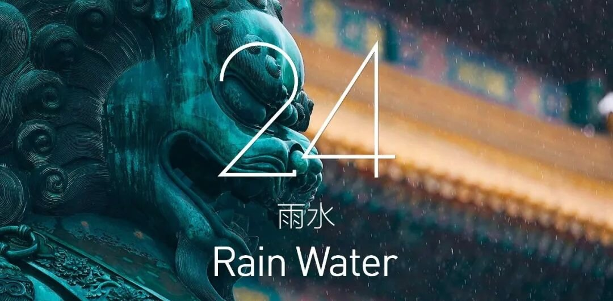
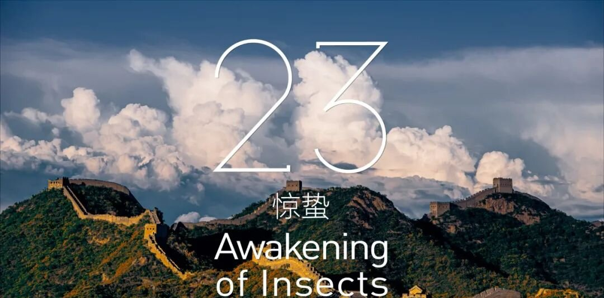
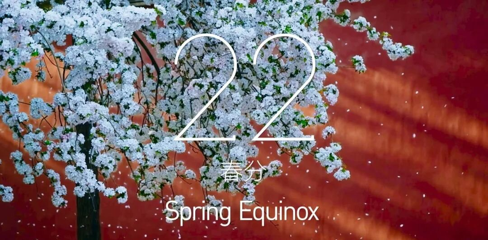
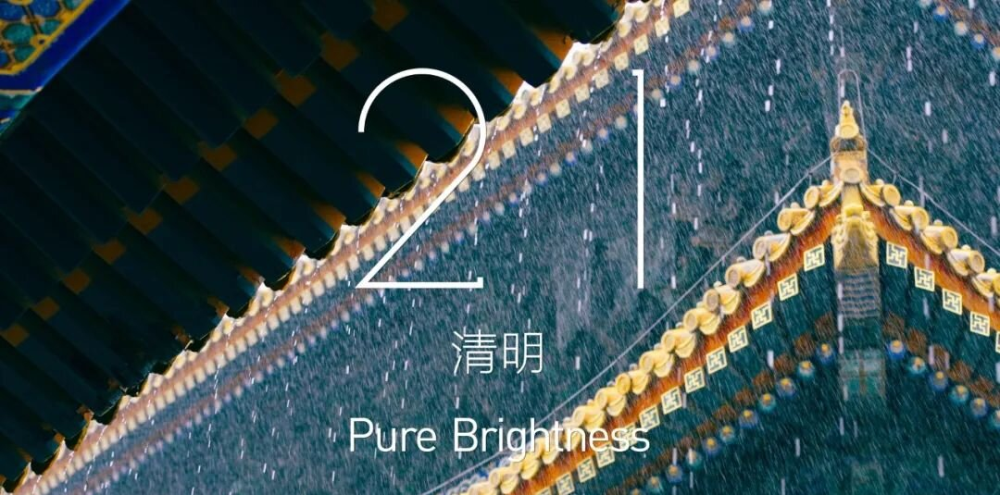
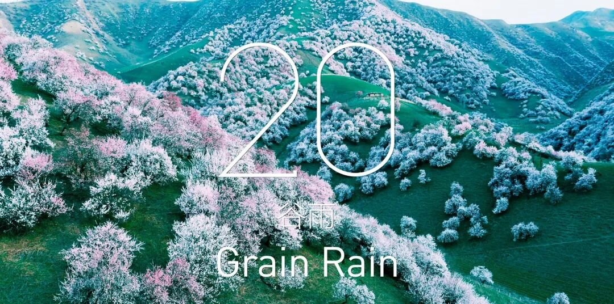

立春
立春：立是开始的意思，立春就是春季的开始。此后气温回升，养生重在护肝。
The beginning of spring means the beginning of spring. Since then, the temperature rise, health care in the liver.

雨水
雨水：降雨开始，雨量渐增,雨水节气前后，万物开始萌动，春天就要到了。养生着重养护脾脏。
Rain: When Rain Begins, the amount of rain increases. Health care focuses on the maintenance of the spleen.

惊蛰
惊蛰：蛰是藏的意思。惊蛰期间雨水渐多，养生应顺乎阳气的升发、万物始生的特点。
AWAKENING OF INSECTS: Insects are hidden meaning. During the awakening of insects,the characteristics of all things born.

春分
春分：分是平分的意思。春分表示昼夜平分，养生应注意保持人体的阴阳平衡状态。
Equinox: Equinox means equal. Vernal Equinox means day and night equinox, health care should pay attention to maintain the balance of Yin and Yang State of the human body.

清明
清明：天气晴朗，草木繁茂。清明时节慢性病多发，养生应注重防病，饮食清淡,养生宜动不宜静。
Qingming: The weather is fine and lush. Qingming season of chronic diseases, health should pay attention to disease prevention, light diet, health appropriate not to move.

谷雨
谷雨：雨生百谷。雨量充足而及时，谷类作物能茁壮成长。养生要注意增减衣服，避免受寒感冒。
Gu Yu: Yu Sheng Momodani. The rainfall is adequate and timely, and the cereal crops can grow well. Health should pay attention to increase or decrease clothing, to avoid cold cold.

联系我们
就心动神往，虚心相就。欢迎你们的来信
On the heart, modest phase. Welcome to your letter.